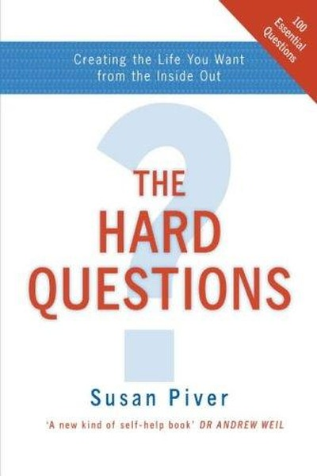

Library › History
Maximum City — Summary & Key Lessons

Bombay at full volume — the city that never sleeps, never stops, never forgives.
📖 OPEN THE FULL INTERACTIVE BREAKDOWN →🌐 Read it in Hindi, Hinglish, Gujarati, Tamil & 22 more languages — free, with audio.
💡 The Big Idea
Bombay is India's future compressed into one peninsula: a city of migrants who leave everything behind and rebuild themselves through sheer hustle. Its overcrowded trains, slums, film studios and stock exchanges run on one fuel — ambition. Mehta shows that chaos contains its own order, and the city's cruelty and generosity are the same force.
🧠 The 6 Key Lessons
Lesson 1: Migration Is the Engine of Everything
Chapter 1: The City
Every generation of Bombay's greatness came from outsiders — traders, laborers, refugees — who arrived with nothing but hunger. Mehta shows that cities and companies grow not by protecting insiders but by absorbing ambitious newcomers. Migration is not a problem to manage; it is a superpower to harness.
📖 Example: After Partition, refugees built whole industries and neighborhoods in Bombay; later, migrants from villages filled the construction sites, mills and film sets. Each wave brought energy the settled locals had lost — the city's metabolism is powered by fresh… Read the full example →
⚡ Do this: Act like a migrant in your own field: arrive fresh, learn the terrain fast, and outwork the comfortable incumbents.
Lesson 2: Chaos Is Not the Absence of Order
Chapter 2: The Streets
To outsiders, Bombay looks like anarchy — but Mehta reveals invisible systems: the dabbawalas' delivery logistics, the taxi unions' rotations, the slum's internal governance. Apparent chaos is often dense coordination that no single authority designed. Learn to read the hidden rules before judging a system broken.
📖 Example: Mumbai's dabbawalas deliver over 200,000 lunch boxes daily with near-zero errors, using color-coded codes and trust — studied by Harvard Business School. No GPS, no managers, no app: just a distributed system of people who invented their own order. Read the full example →
⚡ Do this: Before 'fixing' a chaotic process, map the invisible coordination inside it. The fix is often to strengthen it, not replace it.
Lesson 3: Ambition Requires a Thick Skin
Chapter 3: The Hustle
Bombay tests everyone: the city chews up the hesitant and rewards the relentless. Mehta's characters — gangsters, journalists, actors — all learn the same lesson: rejection is the entry fee, not the verdict. The city's indifference is actually a filter that keeps only the serious.
📖 Example: Thousands of aspiring actors arrive each year to sleep on footpaths outside studios, auditioning for years. A handful make it — not always the most talented, but the ones who treated 'no' as a receipt and kept coming back with a better pitch. Read the full example →
⚡ Do this: Set your rejection quota: collect ten 'no's this month as part of your plan, and treat each as data, not defeat.
Lesson 4: Survival Networks Beat Solo Genius
Chapter 4: The Underworld
Even Bombay's underworld runs on networks of trust and obligation — Mehta shows that the same clan logic powers slums, business and politics. In high-risk environments, your network is your bank balance. Lone wolves starve; connected people survive any storm.
📖 Example: When Mehta's family first arrived, relatives and community networks found them housing, work and schooling. Decades later he watched the same logic in every strata of the city: the person with a network survives the flood; the brilliant loner drowns. Read the full example →
⚡ Do this: Map your support network deliberately: five people you could call at 2 AM, and five you would help the same way. Strengthen both lists.
Lesson 5: The City Teaches You to Play the Long Game
Chapter 5: The Business
Bombay's stock exchange, diamond trade and film industry all reward patience — fortunes are made by those who endure cycles, not by those who sprint. Mehta contrasts the fast-buck crowd with the enduring families who treat decades as a unit of time. Real wealth is a marathon in traffic.
📖 Example: The city's diamond merchants, many from a single community, built a global industry through trust-based deals spanning generations — a handshake in Bombay settles what contracts elsewhere cannot. Their edge was not speed but reputation accumulated over… Read the full example →
⚡ Do this: Ask which of your moves today will still matter in ten years. If the answer is none, recalibrate toward compounding actions.
Lesson 6: Bombay Is a Mirror — It Shows You Who You Are
Chapter 6: The Self
Mehta's final insight is personal: the city reflects your own energy back at you. It is cruel to the complacent and generous to the hardworking; it amplifies what you bring. Places are not neutral — they are magnifiers. Choose environments that magnify who you want to become.
📖 Example: Mehta left as a boy and returned as a writer, finding that Bombay remembered him differently — it gave him stories, pain and material precisely because he brought curiosity and honesty to it. The same city that broke others made him, because of what he… Read the full example →
⚡ Do this: Audit your environment: does your current city, office or circle amplify your ambition or drain it? Change the room if needed.
✅ 5-Step Action Plan
- Bring one outsider's hunger to your work this week — learn the terrain like a new arrival
- Map the invisible coordination in one 'chaotic' process before changing it
- Set a rejection quota of ten 'no's this month
- Strengthen your 2 AM network: reach out to two people this week
- Audit your environment and fix the biggest drain
⚠️ When This Doesn't Work
⚠️ When this doesn't work: Bombay's hustle culture has a brutal side — burnout, exploitation and loneliness are real, and 'thick skin' can become emotional armor that cuts you off from people. Ambition without rest and community is a one-way ticket to the city's darker statistics.
💀 The Graveyard Proves It
🍾 Vijay Mallya — The King of Good Times' Airline of Bad Math. Burn: ₹9,000 crore, exile. Read the full case study →
💬 Best Quotes from Maximum City
- “Bombay is the city of the future — a maximum city, at full volume.”
- “In Bombay, everyone is from somewhere else; that is why nobody is an outsider for long.”
- “The city asks for everything you have, and gives back everything you can take.”
Interactive version: mark lessons as read, listen in your language, share quote cards.